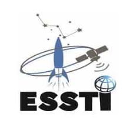

የኢትዮጵያ የጨረራ መከላከያ ባለስልጣን
የኢትዮጵያ የጨረራ መከላከያ ባለስልጣን በታህሳስ 1993 ዓ.ምበጨረር መከላከያ አዋጅ ቁጥር 79/1993 እንዲሁም በተሻሻለው አዲስ አዋጅ ቁጥር 571/2008 የተቋቋመ ነው፡፡ ባለስልጣኑ ማንኛውንም አይነት የጨረር አመንጪ ወደ አገር ውስጥ ከማስገባት፣ ወደ ውጪ ከመላክ፣ ከመጠቀም፣ ከማጓጓዝ እና ከማስወገድ ጋር በተያያዘ የሚቆጣጠር እና የሚያስተዳድር የመንግስት አካል ነው፡፡ ከዚህ በተጨማሪም የጨረር አመንጪዎችን በመጠቀም ማንኛውም አይነት እንቅስቃሴ ለማድረግ የሚያቅድ አካል አስቀድሞ ባለስልጣኑን በማሳወቅ ፈቃድ ሊያገኝ ይገባል፡፡ ተቋማት ፍላጎታቸውን በሚያሳውቁበትም ወቅት ባለስልጣኑ ለማመልከት አስፈላጊ የሆኑ ልዩ የመቆጣጠሪያ መስፈርቶችን ያቀርባል፡፡
የኢትዮጵያ ባዮ ቴክኖሎጂ ኢንስትቲዩት
ባዮቴክኖሎጂ ኢንስቲቲዩት በ2008 ዓ/ም የተቋቋመ ሲሆን በሜዲካል፣ በግርብርና፣ በኢንደስትሪያል፣ እና በኢንቫይሮሜንታል ባዮ ቴክኖሎጂ ስራዎች ዙሪያ ጥናት እና ምርምር የሚያደርግ ተቋም ነው።
የኢትዮጵያ ቴክኖሎጂ እና ኢኖቬሽን ኢንስቲትዩት
የኢትዮጵያ ቴክኖሎጂ እና ኢኖቬሽን ኢንስቲትዩት በ2011 ዓ.ም በሚኒስትሮች ምክር ቤት ደንብ ቁጥር 438/2011 ተቋቁሟል። የኢንስቲትዩቱ ዓላማዎች፥ 1. የኢኖቬሽንና ቴክኖሎጂ የምርምር መሰረተ ልማቶችን መገንባት፤ 2. በመንግስት ተለይተው ቅድሚያ በሚሰጣቸው አምራች እና አገልግሎት ሰጪ ተቋማት በኢኖቬሽን እና ቴክኖሎጂ እንዲታገዙ ማድረግ፤ 3. ለኢኖቬሸንና ቴክኖሎጂ ልማትና ምርምር ግብዓት ሊሆኑ የሚችሉ መረጃዎችን ማሰባሰብ፣ ማደራጀት፣ እና በተለያዩ ምጡቅ ቴክኖሎጂ ስነ-ዘዴዎች አማካኝነት ትንተና ማካሄድ 4. በአዳዲስ ቴክኖሎጂ ዘርፎች የኢኖቬሽንና ቴክኖሎጂ ምርምሮችን ማስተባበር፣ መተግበር እና ተደራሽ ማድረግ፡፡

የኢትዮጵያ ጂዮስፓሻል መረጃ ኢንስትቲዩት
የኢትዮጵያ ጂኦስፓሽያል ኢንስቲቲዩት በ2010 ዓ/ም የቀድሞ የኢትዮጵያ ካርታ ስራዎች ኤጀንሲን መልሶ በማደራጀት የተቋቋመ ሲሆን የአገሪቱን የጂኦስፓሽያል ፍላጎቶችን በበላይነት የሚያስተባብር ተቋም ነው።
የኢትዮጵያ የህዋ ሳይንስ እና ቴክኖሎጂ ተቋም
የኢትዮጵያ የህዋ ሳይንስ እና ቴክኖሎጂ ተቋም በ2009 ዓ/ም የተቋቋመ ሲሆን አገሪቷ በርካታ አቅጣጫ ያላቸውን የሕዋ ሳይንስ እና ቴክኖሎጂ ጥቅሞች እንድታገኝ ለማስቻል እንዲሁም በፍላጎት ላይ የተመሰረተ እውቀት ያካበተ፣ ክህሎት ያለው እንዲሁም በአስተሳሰብ ረገድ አዋቂ የሆነ ባለሙያ በኤሮስፔስ ሳይንስ ለማፍራት ታስቦ የተቋቋመ ነው። ተቋሙ አገሪቷ በዘርፉ ላይ አለምአቀፍ ተወዳዳሪነት እንዲኖራት፣ የሕዋ ሳይንስ እና ቴክኖሎጂ መሰረተ ልማቶችን እንድታዘጋጅ እና እንድታጠናክር እንዲሁም የሕዋ ሳይንስ እና ቴክኖሎጂ ልማትን በአገሪቷ ውስጥ እንድታፋጥን ብሎም አገሪቷ ለኤሮስፔስ ሳይንስ እና ቴክኖሎጂ ልማት የላቀ አስተዋጽኦ የምታደርግ እንድትሆን የማስቻል ተልዕኮ አለው።